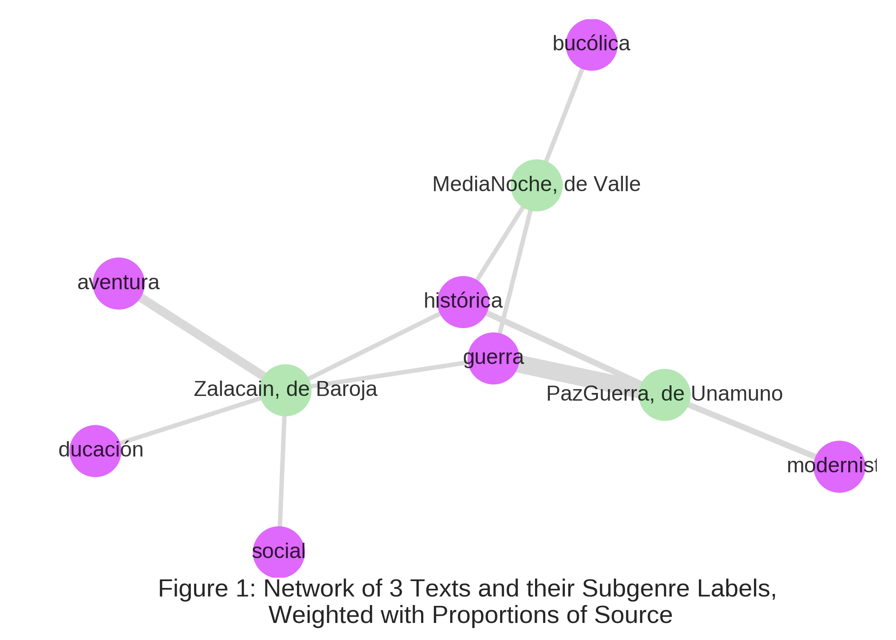
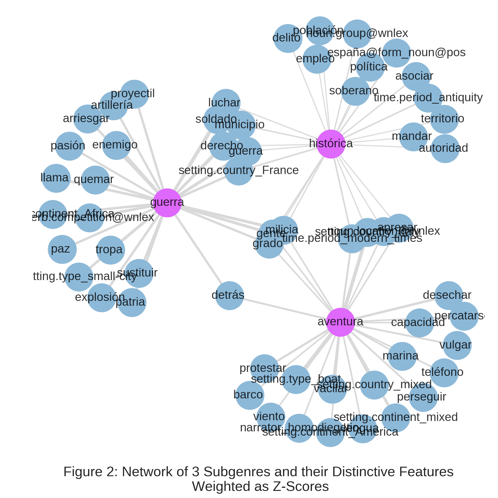
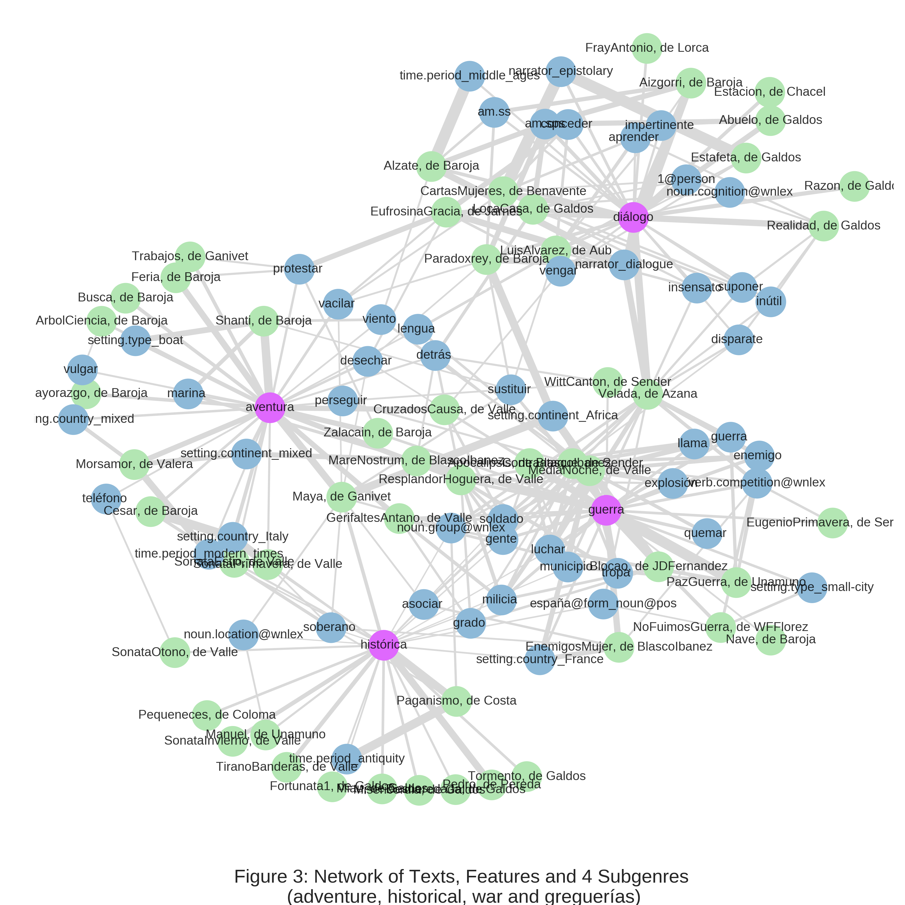
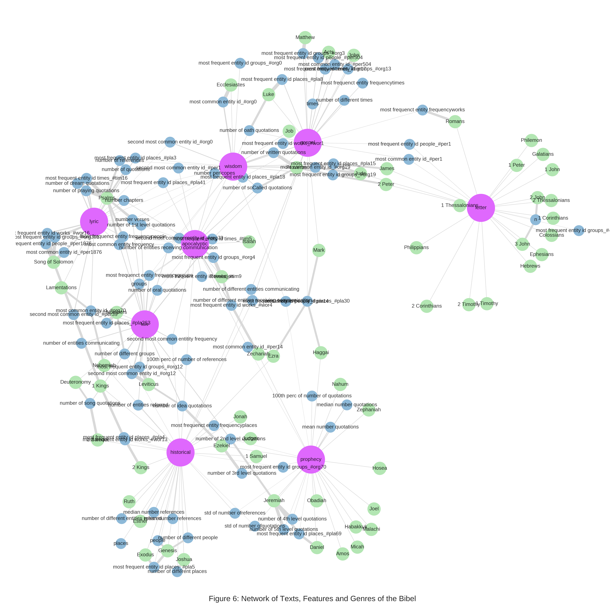
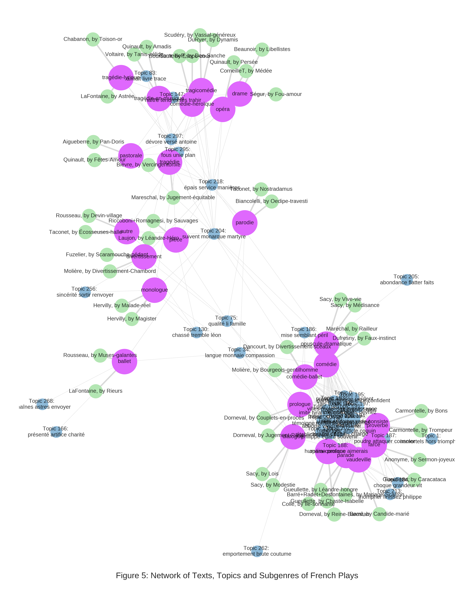
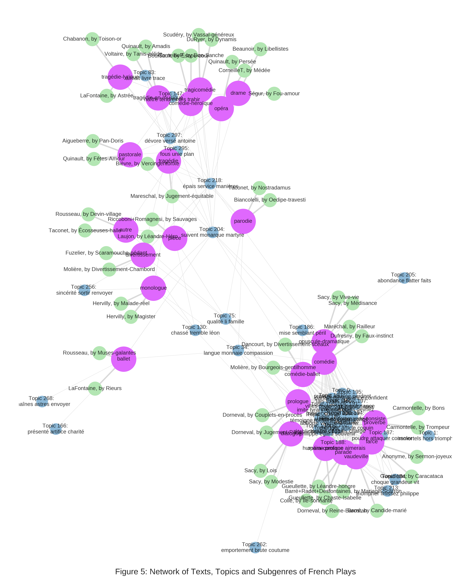

1. Abstract
Several theoretical models have been proposed for genre, such as the Aristotelian scholastic taxonomy, the family resemblance and the prototype theory. However, these models lack of empirical applications to real examples of genres. This proposal is the culmination of a series of analysis, presenting a theoretical, computational and visual graph-based model that fits several observations. This formalization unifies components of the previous theories, offering visually the intention (internal features) and extension (the best representatives and instances) of each category. Besides, it allows two intuitive interpretations based on the evaluation: the centrality as classification results, and the distance as similarity through shared features. The model is applied to three data-sets of different periods and languages: modern Spanish novels, classic French plays and the books of the Bible.
 
